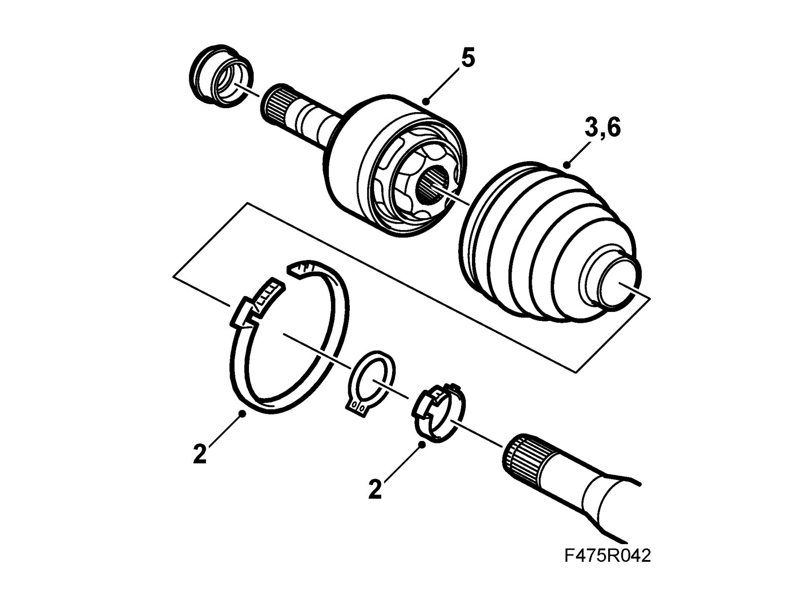

Inboard Drive Shaft Universal Joint, Man
Inboard drive shaft universal joint, manTo remove
Important
The drive assembly is very susceptible to dirt.
1. Clean the drive shaft thoroughly.

2. Remove the clamps on the inboard drive shaft universal joint.
3. Press in the boot on the shaft as far as possible.
4. Set up the drive shaft in a vice with soft jaws.
5. Drive off the inboard drive shaft universal joint with a hammer and drift.
6. Remove the boot.
To fit
1. Fit the boot onto the drive shaft.
2. Fit the drive shaft into the inboard drive shaft universal joint. Check first that the circlip is in the groove.
3. Press in the shaft until the circlip snaps in place. Use a hydraulic press.
4. Fill with 185g 87 92 798 Drive shaft grease, man. Save any excess to fill the boot later.
5. Fit the boot and apply the large clamp rings. Use a pair of 30 16 235 Pliers.
Important
A groove should be visible on the shaft.